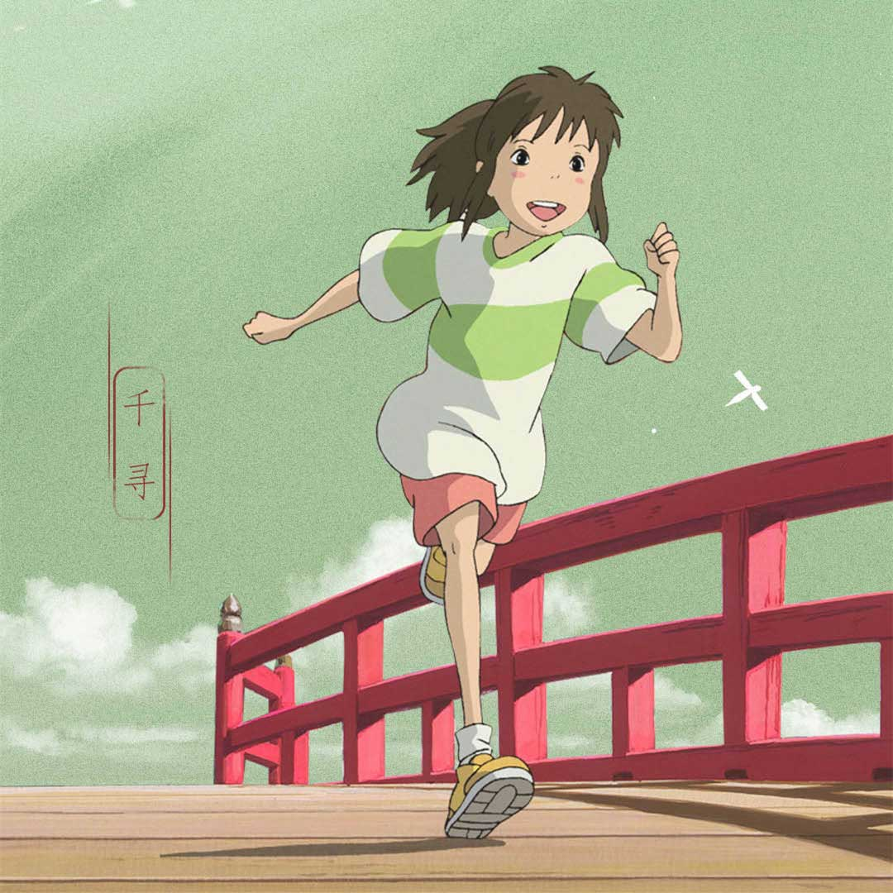
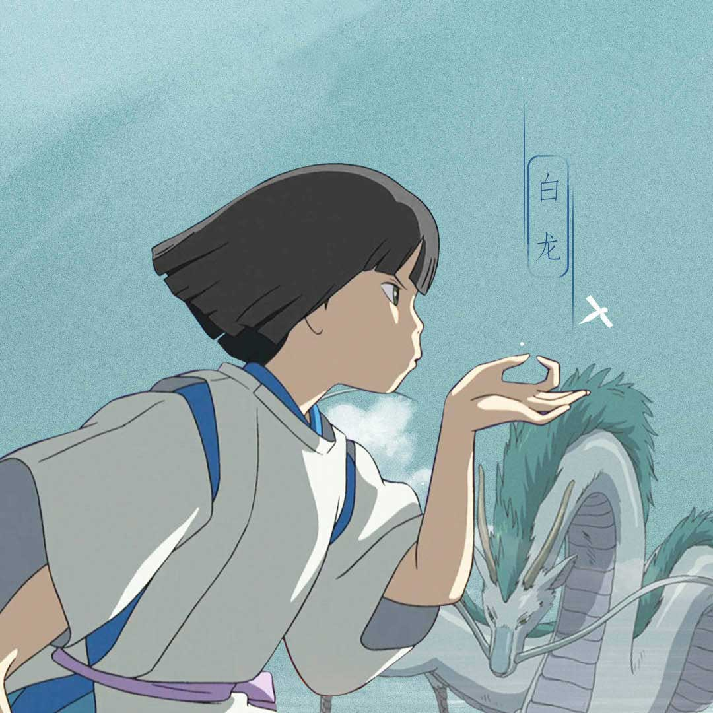
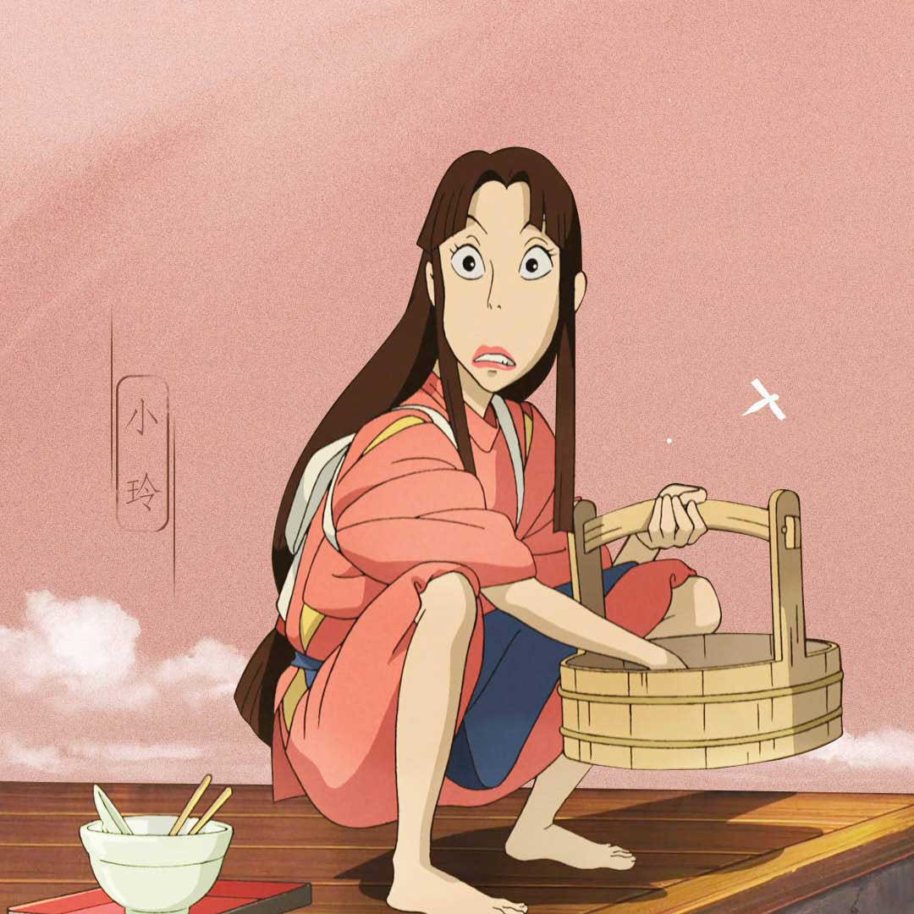
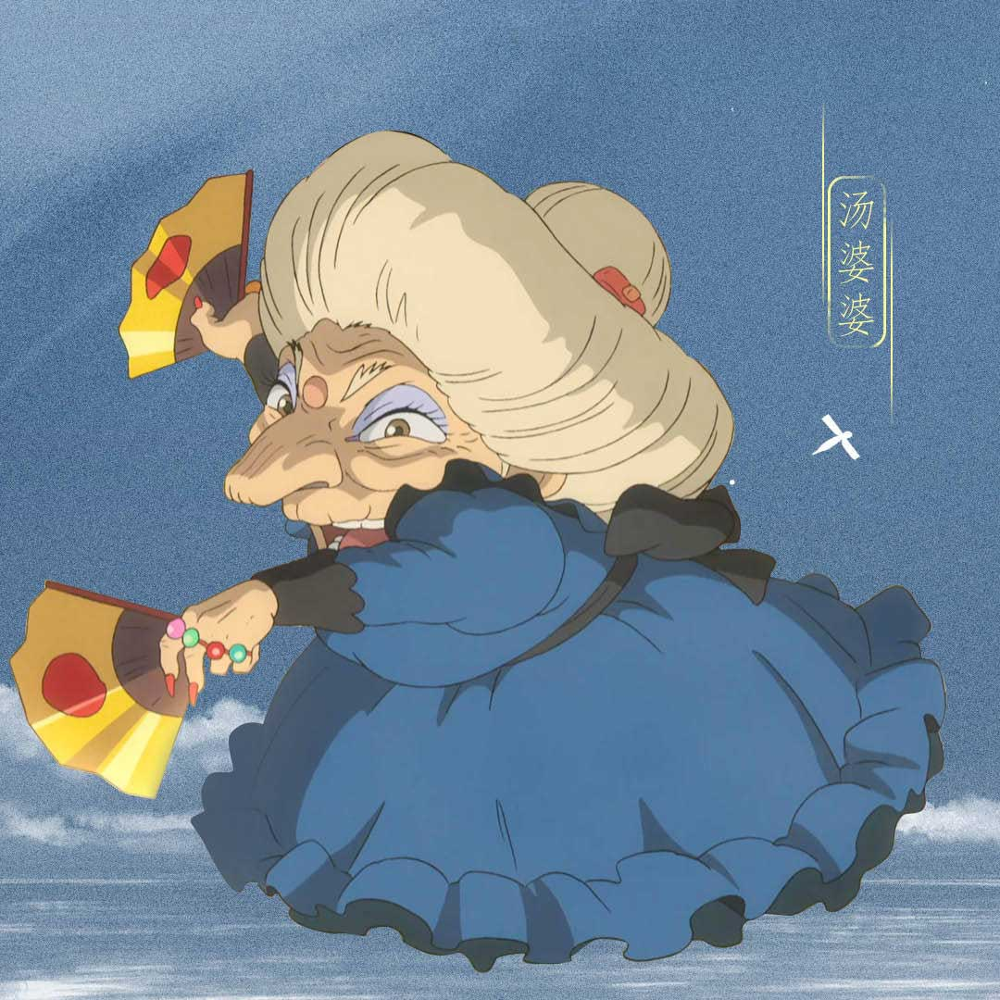
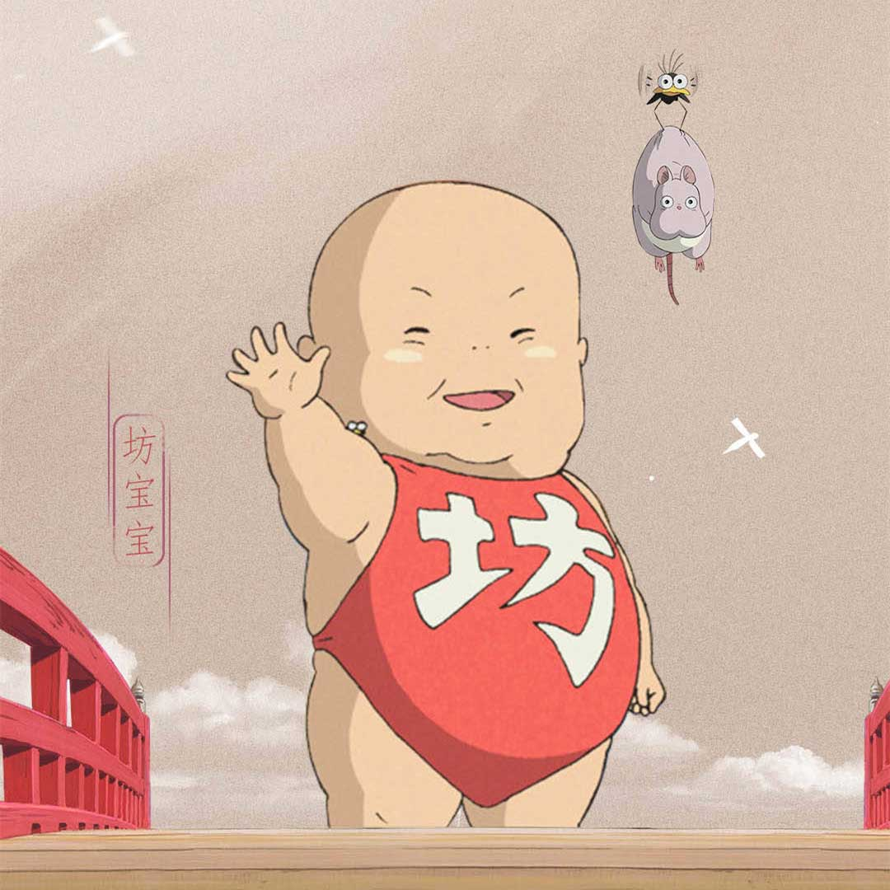
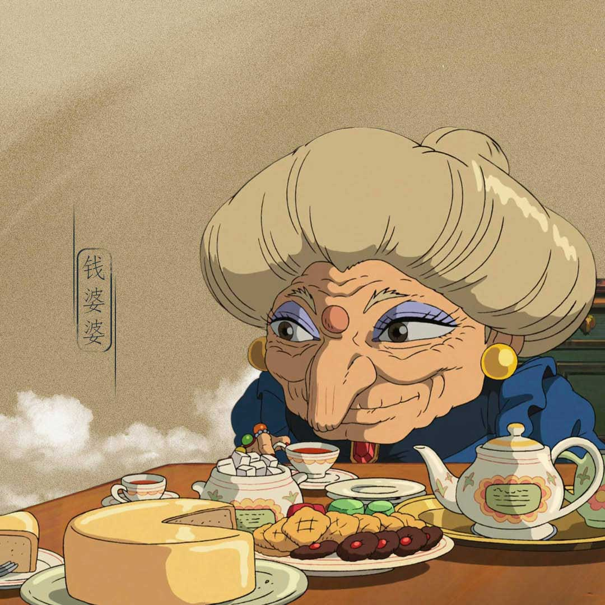
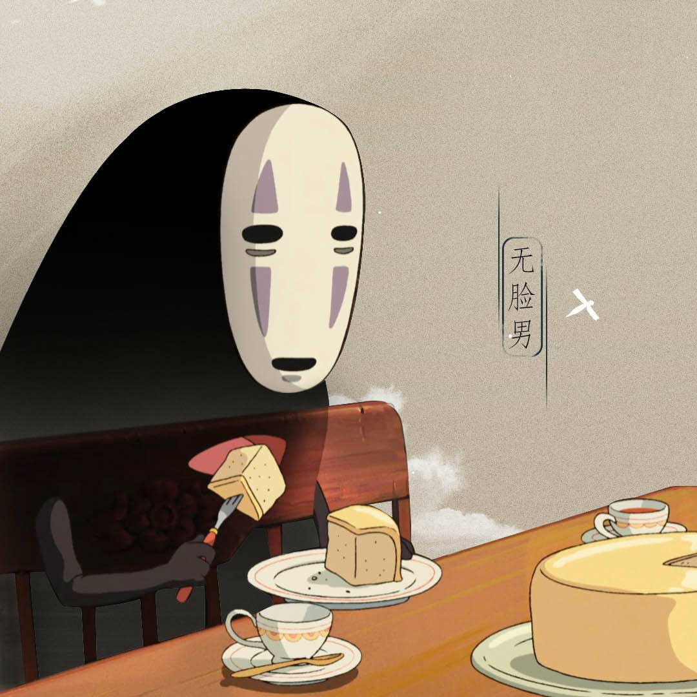
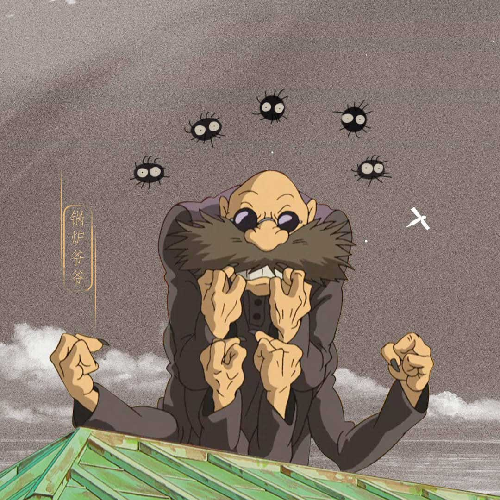
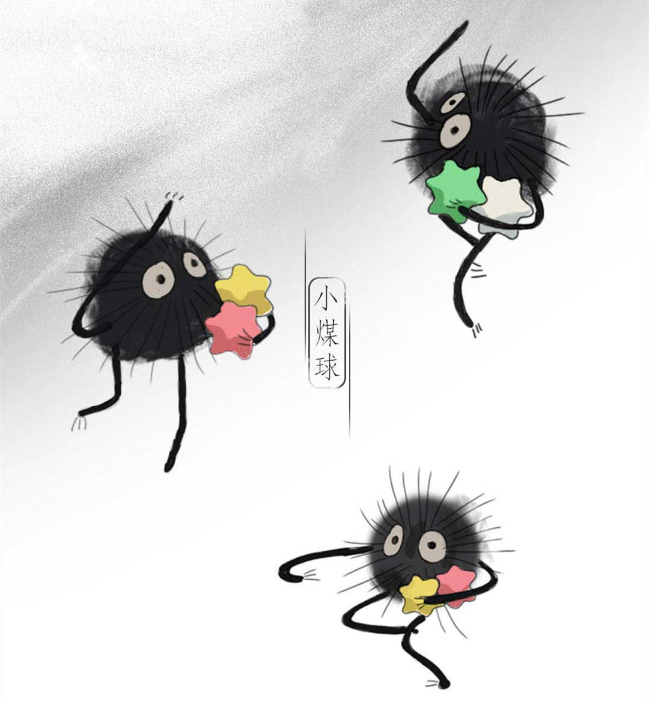

人物简介

千寻（荻野千寻）
荻野千寻是个十岁的少女，是个普通的日本小学生。相貌平平，拥有一头棕色的长发，扎起马尾，额头留有碎刘海。在进入神明世界前，上衣主白和浅绿，袖子不长不短；下为粉色短裤，脚穿黄色运动鞋。进入神明世界后，由于工作需要，千寻换上淡红色的仆人装，上衣袖子宽大，并与衣体未完全缝合，从肩部可以看见里面所穿的白色衣服；腰部系有棕红色衣带，内穿围兜。下为裤子，长度过膝盖，但并未至脚踝。赤脚。由于千寻体形娇小，上衣较为宽大，于是用白色的长布带固定上衣，并在背后打了一个蝴蝶结。虽然看上去迟钝，没有礼貌，对外界许多事情提不起兴趣，普通平凡，但个性善良单纯，坚强勇敢，为朋友赴汤蹈火，从而获得别人的真心对待，如为满是臭味、无人愿意服务的河神清洗垃圾，得到了河神丸子。

白龙（赈早见琥珀主）
赈早见琥珀主是琥珀川的河神，是一条白龙，因琥珀川被人类掩埋导致无处可去。为了学习魔法，来到神明世界，成为汤婆婆的弟子，对汤婆婆惟命是从；与此同时，他被汤婆婆夺走了自己的名字，并被起名为小白。此外，小白体内有汤婆婆为了操纵小白而设的虫子。人形时，发色是青色，齐肩发，齐刘海。上衣为白色，袖子短而宽大，从肩部可以看见里面所穿的蓝色衣服；腰部系有衣带，下为裤子，裤长至膝盖，并在膝盖处束起。脚穿木屐。龙形为白鳞青鬃，有着长长的胡须。个性温柔冷静，遇事不惊，从容自处。做了汤婆婆的弟子之后，眼神越来越凌厉，不再温柔，变得矛盾复杂。遇到千寻后，对她很温柔，想尽办法在这个神明世界里保住千寻。因碍于身份，在人前不会对千寻表露关心，因此刚开始时千寻还误会以为有两个白先生。

玲
玲是在油屋工作的二十岁少女。在千与千寻里，小玲很有责任心，她为了锅炉爷爷的一条碳烧蝾螈，帮助千寻去找汤婆婆。虽然一开始表面不愿意对千寻伸出援手，但实际上给了千寻很多鼓励和帮助，后来成为千寻在澡堂最好的朋友，是一个像大姐姐一样的存在。由于她的形象与澡堂内的其他女性有显著的不同，有人认为她最初其实也是人类，所以才会同情千寻给予帮助。她很善良，汤屋的妖怪从电梯出来时，她用身体挡住千寻，并尽力帮千寻打掩护。虽然对千寻和锅炉爷爷说话都比较凶，却是真心关照，显然是嘴硬心软的类型。她呵护千寻，也很勇敢，会在有无脸男威胁时，厉声说：“你如果敢对小千怎么样，我一定不会放过你的”。她坚定而有韧性，隐忍而有毅力，她曾看着海那边的城市，向往而肯定地对千寻说“我一定会离开这里的。”

汤婆婆
汤婆婆是澡堂“汤屋”的主管，同时也是镇上的管理人。她拥有很强的魔法，还经常化身为黑翅膀的大鸟出门巡视。她对澡堂的客人百依百顺，笑脸相迎。虽然汤婆婆拥有数之不尽的财富，但是她并没有耽于享乐，每天都在房间里数钱记账，是一个十足的吝啬小老板形象。尽管汤婆婆看起来权力很大，但面对她的宝贝儿子却完全没有办法，为宝宝准备了华丽的房间和各种各样的玩具，生怕宝宝不高兴哭闹，可以说是到了无所不从的娇惯地步。尽管汤婆婆是一个十足的恐怖反面角色，宫崎骏却淡化了对反面的描写，通过宝宝体现了她的温柔面。她总是留给我们忙碌的样子，千寻找她安排工作的时候，她在忙于记账。晚上大家笙歌的时候，她又套上黑翅膀忙于到处巡逻或是敛财。汤屋里来了手下搞不定的客人，她又忙于亲自接待。

坊宝宝
坊宝宝是汤婆婆的独子，也是汤屋的主管，和汤婆婆一起管理汤屋。他穿一件印有"坊"字的红色肚兜。虽然他个子非常大，却是婴儿的模样，很娇惯任性，因为害怕“细菌”而天天待在堆满了玩具和枕头的房间里。和大多数孩子一样，虽然坊宝宝喜欢用哭来威胁人。但他十分想和千寻玩，曾帮助过千寻。后来被钱婆婆变成一只小老鼠跟随千寻旅行，因此有了很大成长。他在变成小老鼠的时候很可爱。千寻想从坊宝宝的房间进入汤婆婆的书房，坊宝宝是为了救千寻而装出睡觉的样子的。可千寻要离开时，坊宝宝突然紧拉着她的手腕不放，要千寻陪他玩，并劝说千寻不要出去，因为外面有很多细菌。坊宝宝死命的拉扯着，并威胁千寻说如果不陪同他玩耍，他就哭。让汤婆婆杀了千寻。没办法，千寻只好用自己手中沾染的血吓唬他。

钱婆婆
钱婆婆和汤婆婆一样，也是个法力强大的女巫。她和汤婆婆长得一样，连手上带的戒指都是一样的。但因截然不同的个性导致她跟汤婆婆的关系从小就很不好，所以她独自住在离澡堂很远的一个郊外小屋里。不恋财物，不慕名利，生活非常简朴。为了追踪受命偷取她魔法合约印章的白龙，她用分身去了澡堂——汤屋。在汤屋里，钱婆婆遇到了小千。钱婆婆先是把坊宝宝变成了一只肥大的白老鼠，然后把在天空飞着的仆人乌鸦变成了一只苍蝇，后来又把三个头似的东西连在一起，化作坊宝宝。最后钱婆婆要千寻交出白龙。荻野千寻在知道事情原委之后，亲自把魔女合约印章归还给钱婆婆并且表达歉意。在钱婆婆与小千交谈之后，她给了荻野千寻很多非常有意义的启示，在白龙接千寻时原谅了他之前的过失，并收留了无脸男做帮手。

无脸男
无脸男，又叫“无颜”或"无脸鬼"。他是一只神秘的鬼怪，全身黑色，头戴一个白色面具。他个性单纯直接，因为被拒绝而做出了一系列的过激行为。他表面看起来很可怕，其实心地非常善良。他总是戴着面具孤独的在汤婆婆的管辖范围内游荡。他跟现代社会里的人们一样，渴望交到朋友。这个角色被认为有强烈的象征主义，更有人认为他变化的过程是人性被社会阴暗面污染的写照。无脸男是一个很特别的角色，没有初心、本我的“无意识”生物，茫然地游荡，也象征了孤独，而它是最原始的，本来就存在，并无好与坏之分。因为被千寻身上属于孩子的纯真、明净所吸引，受到荻野千寻的帮助而对荻野千寻有了很深的感情，不自觉跟随着她、讨好她。最后在钱婆婆的帮助下改过自新，最终得到了救赎。

锅炉爷爷
锅炉爷爷是澡堂——汤屋的锅炉房主管，表面上是一个普通的人类老爷爷形象——驼背、满脸皱纹、一双小脚，实际上却长有可随意伸缩的六条手臂，非常方便从巨大的药材柜拿取药材和工作。他表面上非常凶，实际上却是一个慈祥善良的老爷爷，总是无私帮助千寻。在赈早见琥珀主的推荐下，小千找到他想要谋取一份工作，锅炉爷爷表面不肯帮忙，实际上却是让小玲带她去了汤婆婆那里，小千顺利的取得了工作。由于他控制着澡堂泡澡用的药材和热水，多次帮助了千寻的工作。影片最后，他还拿出一张收藏了40年的车票送给千寻，让她去寻找钱婆婆，把魔女合约印章归还给钱婆婆。他表面看起来很凶，实际上却是一个非常慈祥善良的老爷爷。他总是无私的帮助千寻，就像对自己的孙女一样。

小煤球
汤婆婆曾经对千寻说，你是选择变成猪？还是变成小煤球？所以干活的小煤球也有可能是由人类变成的，而且是那种因为懒惰不工作的人变成的。贪吃的人会变成猪，而不想工作的人则会变成小煤球。小煤球们除了懒惰以外，他们还有一个很明显的特点，那就是喜欢不劳而获。在影片中，千寻帮助一个小煤球抬起了煤块，这一幕被其他的小煤球看到了，于是他们纷纷放下了手中的煤块，将千寻团团围住，想让她帮助他们，把所有的煤块都抬完。宫崎骏对人性有很深的了解，现实生活中的人们不也是这样吗，遇到问题和工作的时候，最先想到的不是解决问题，而是想把这个问题或者工作甩给其他人，自己只想不劳而获，这些人即使被变成了小煤球，他们仍然没有改掉自己身上的恶习，真的好笑又心酸。